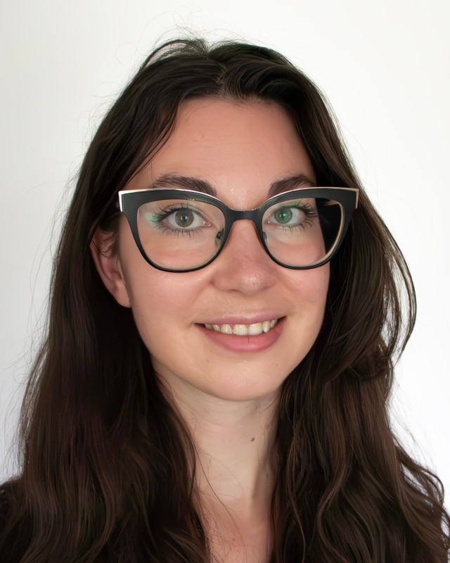

2017
High school diploma
Lycée Denis-de-Rougemont · Neuchâtel, Switzerland
Hello, I'm
Barcelona, Spain
Physics-based forward modelling of stellar activity in photometry, spectroscopy, and radial velocities, from the Sun to other stars.
Currently: developing SunSim, the solar implementation of StarSim

I am a PhD researcher at the Institute of Space Sciences (ICE-CSIC) and the Institute of Space Studies of Catalonia (IEEC), working to disentangle stellar variability from planetary signals in extreme-precision radial velocity observations.
My research bridges first-principles modelling of stellar activity and observational constraints. Within the ERC-funded SPOTLESS project, I contribute to the development of StarSim, a physics-based framework for predicting the spectroscopic and photometric signatures of stellar magnetic active regions, including spots and faculae.
Through SunSim, its solar implementation, I combine spatially resolved solar observations with synthetic spectra from 3D magnetohydrodynamic simulations. Benchmarking against nearly a decade of HARPS-N observations, I investigate how accurately solar radial velocity variability can be predicted from first principles and assess the resulting improvements in exoplanet detectability through injection-recovery experiments.
My broader goal is to extend this approach to other stars and additional sources of variability, particularly granulation and supergranulation, bringing us closer to detecting Earth analogues.
Member of the Ariel and CARMENES consortia.
See my projectsWhat I work on, most recent first.
2025–now
Solar implementation of StarSim · IEEC
Developer of SunSim, and major developer of StarSim. Predict solar variability in photometry and radial velocities from spatially resolved observations, using synthetic spectra from first principles, and quantify how the synthetic RV variability can improve the detectability of low-mass planets.
2026–now
Quiet-Sun velocities · SDO/HMI
An extension of SunSim that brings in quiet-Sun convective flows, to model their contribution to solar RV variability.
2026–now
Synthetic active-region maps
Generate realistic spot and facula maps from a few stellar parameters, to simulate solar activity statistically and extend it to other Sun-like stars.
Soon available on GitHub.
2026–now
CCF line masks · with Khaled Al Moulla · CAUP
Build CCF line masks from any set of spectra (observations, simulations or different instruments), keeping the lines seen in all of them so the same mask applies to each. I developed it to compare solar observations (PoET) and synthetic spectra (MURaM) fairly at the CCF level.
2024
Research project · EPFL
Assess two-channel deconvolution with STARRED on simulated ARRAKIHS images, with Frédéric Courbin and Pascale Jablonka.
2024
Master's thesis · EPFL
Prepare the ARRAKIHS mission: choose its filters and assess the detectability of ultra-faint dwarf galaxies, with Pascale Jablonka and Yves Revaz.
Contributed talks and posters, conference service, and co-authored papers. Full lists on Google Scholar, ORCID and ADS.
From Neuchâtel and Lausanne, Switzerland, to Barcelona, Spain.
2017
Lycée Denis-de-Rougemont · Neuchâtel, Switzerland
2020
EPFL · Lausanne, Switzerland
2024
EPFL · Lausanne, Switzerland
Thesis: preparing for the ARRAKIHS mission (filter choice, detectability of ultra-faint dwarfs), with Pascale Jablonka and Yves Revaz.
2025–
UAB · IEEC · ICE-CSIC · Barcelona, Spain
Stellar activity modelling for EPRV, supervised by Ignasi Ribas and Nina Nèmec.
Outside research.
Force-free dog training.
Hiking & running.
Bouldering.
Painting.
Write to me
Two pages